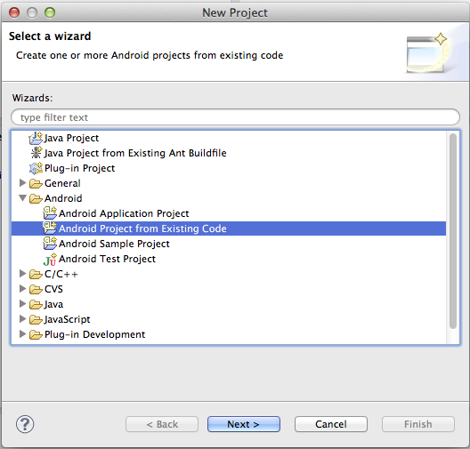
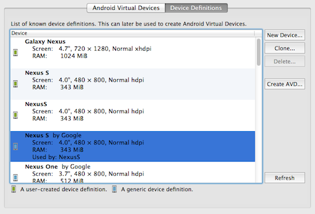
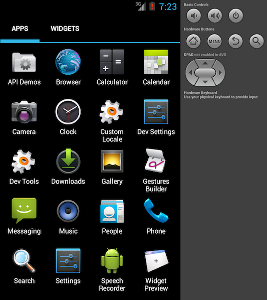

Платформа Android руководство
В этом руководстве показано, как настроить среду разработки SDK для развертывания приложений Cordova для устройств Android. Смотрите ниже для более подробной информации конкретной платформы:
- Андроид конфигурации
- Андроид WebViews
- Андроид плагины
- Обновление Android
- Android средства командной строки
Средства командной строки относятся к версии до Cordova 3.0. Сведения о текущем интерфейсе см интерфейс командной строки.
Требования и поддержка
Просмотреть требования к системе для Android SDK.
Кордова поддерживает Android 2.2, 2.3 и 4.x. Как правило являются устаревшими платформ как они опустится ниже 5% на Google в панель мониторинга распределения.
Разработчики должны использовать cordova утилита в сочетании с Android SDK. Увидеть интерфейс командной строки для информации как установить его, добавлять проекты, а затем построить и развернуть проект.
Установите SDK
Установите Android SDK от developer.android.com/sdk. В противном случае вам могут быть представлены с выбором где установить SDK, переместить загруженный adt-bundle дерево, чтобы везде, где вы храните средства разработки.
Для Кордова средств командной строки для работы, вам необходимо включить в SDK tools и platform-tools каталогов в среде PATH. На Mac, вы можете использовать текстовый редактор для создания или изменения ~/.bash_profile файл, добавив строку, например, в зависимости от того, где SDK устанавливает:
export PATH=${PATH}:/Development/adt-bundle/sdk/platform-tools:/Development/adt-bundle/sdk/tools
Это предоставляет средства SDK в недавно открывшийся терминал windows. В противном случае выполните это, чтобы сделать их доступными в текущем сеансе:
$ source ~/.bash_profile
Чтобы изменить путь среды на Windows 7:
Нажмите на меню " Пуск " в левом нижнем углу рабочего стола, щелкните правой кнопкой мыши на компьютере, а затем нажмите кнопку Свойства.
Нажмите кнопку Дополнительные параметры системы в столбце слева.
В появившемся диалоговом нажмите Переменные среды.
Выберите переменную PATH и нажмите редактировать.
Добавьте путь, основанный на котором установлен пакет SDK, например следующие:
;C:\Development\adt-bundle\sdk\platform-tools;C:\Development\adt-bundle\sdk\toolsСохраните значение и закрыть и диалоговые окна.
Также может потребоваться включить Java и Ant. открыть командную строку и введите java , а также ввести ant . Добавления к пути зависимости не удается запустить:
;%JAVA_HOME%\bin;%ANT_HOME%\bin
Откройте проект в SDK
Использование cordova Утилита, чтобы создать новый проект, как описано в Cordova интерфейс командной строки. Например в каталоге исходного кода:
$ cordova create hello com.example.hello "HelloWorld"
$ cd hello
$ cordova platform add android
$ cordova build
Как только создан, вот как использовать пакет SDK для его изменения:
Запустите приложение Eclipse .
Выберите пункт меню Нового проекта .
Выберите Android-проект из существующего кода из результирующее диалоговое окно и нажмите Далее: 
Перейдите к
hello, или какой вам создан каталог для проекта, затем кplatforms/androidподкаталог.Нажмите кнопку Готово.
После того, как откроется окно Eclipse, красный X может показаться указывают нерешенные проблемы. Если это так, выполните следующие дополнительные действия:
Щелкните правой кнопкой мыши на папке проекта.
В результате диалоговом окне Свойства выберите Android из области переходов.
Для проекта построения целевого объекта, выберите самый высокий уровень Android API, которые вы установили.
Нажмите кнопку ОК.
Выберите очистить из меню проект . Это должно исправить все ошибки в проекте.
Развертывание в эмулятор
Вы можете использовать cordova утилита для запуска приложения в эмуляторе, или вы можете запустить его в SDK. В любом случае, SDK сначала должен быть настроен для отображения по крайней мере одно устройство. Чтобы сделать это, используйте менеджер SDK Android, Java-приложение, которое выполняется отдельно от Eclipse. Существует два способа, чтобы открыть ее:
Запуск
androidв командной строке.В Eclipse, нажмите этот значок на панели инструментов:

После открытой, Android SDK Manager отображает различные библиотеки времени выполнения:

Выберите Инструменты → Управление AVDs (Android виртуального устройства), а затем выберите любой элемент из Определения устройства в диалоговом окне возникшей:

Нажмите Создать AVD, при необходимости изменяя имя, затем нажмите кнопку ОК чтобы принять изменения:

AVD затем появляется в списке Виртуальных устройств Android :

Чтобы открыть эмулятор как отдельное приложение, выберите AVD и нажать кнопку старт. Он запускает, как он на устройство, с дополнительные элементы управления, доступные для аппаратных кнопок:

В этот момент вы можете использовать cordova утилита для развертывания приложения в эмулятор из командной строки:
$ cordova emulate android
Если вместо этого вы работаете в среде Eclipse, щелкните правой кнопкой мыши проект и выберите выполнить как → Android-приложение. Вас могут попросить указать AVD, если нет уже открыт.
Для более быстрый опыт используйте изображение на базе Intel эмулятор:
Установите один или несколько
Intel x86 Atomобразов системы, а такжеIntel Hardware Accelerated Execution Manager, доступных под экстра.Запустите установщик Intel, который доступен в пределах вашего Android SDK в
extras/intel/Hardware_Accelerated_Execution_Manager.Создайте новый AVD с поставленной цели Intel изображения.
При запуске эмулятор, обеспечить существует без сообщений об ошибке, указывающее на сбой загрузки HAX модулей.
Развертывание на устройство
Для проталкивания приложение непосредственно на устройство, убедитесь, что USB отладки включен на вашем устройстве, как описано на Android Разработчик сайтаи использовать мини-USB кабель для подключения к вашей системе.
Вы можете нажать приложение на устройство из командной строки:
$ cordova run android
Попеременно в Eclipse, щелкните правой кнопкой мыши проект и выберите выполнить как → приложения для Android.